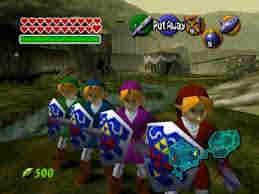
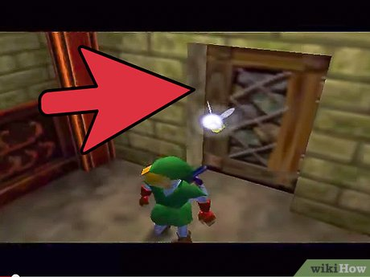

TL;DR: The new Zelda game, Ocorina of Time, is abysmal. Let's just say Zelda games were meant to be 2D games. It's a classic tradition and it ought to stay that way.
I will say, the plot is not the worst thing in the world. It reminds me of other Zelda games where, the plot comes second, and the gameplay and sense of adventure (which is terrible in this game) come first. The story is about the green elf character Link who, like in all of the games, has to go and save the pricness. I know that may sound predictable since you've played these games before, but actually I think there are some clever twists in there for players who are invested in the story. For example, at the beginning of the game, you actually see the main villain, named Ganondorf as usual, inside of the castle with Zelda. The twist here is that, instead of being the princess who needs to be saved, this time Zelda is a twist villain who works together with Ganon. That's what it seemed like to me, anyways.
I don't know why these reviews are categorized to seperate the plot and the characters, because I feel like these are two very connected things. But anyways LOL. I think the characters in this game are really fun and the only good part of the game. Link is really expressive and you can tell what he is thinking all the time. (SPOILER ALERT: He is thinking about fighting the bad guys). Also, the other characters like the guards that catch you at the castle are fun and good characters, and they are relatable because even though they are trying to stop you, they are doing their job so it makes sense that they would do that. I also think that Ganondorf is a cool character, but he is definetly a bad guy and the main bad guy of the game. I did not like some of the other characters though.
Get ready, ladies and gentlemen. This is where it all gets really bad, and I mean REALLY BAD. This is an embarresment to video gaming. You know how Zelda video games are really fun because they are two dimensional and everything makes sense and you know what you are supposed to be doing because of that perspective? And how you need to be able to see things top down to be able to for example know that an enemy is on the other side of a wall? Well guess what. That is all completely gone now. They took the formula that made these games so great, and they threw them away. You know longer even know what is happening half the time, because the game now takes place in an ugly 3D environment, and also the ENTIRE GAME the main character is right there in front of the camera, blocking your view. I don't like to say swear words, so I won't. Needless to say, however, this is terrible, and it really upset me a lot. Combine that with the awful controls, poorly designed items like the slingshot item, and the abysmal dungeons, and you have yourself a failure here. Terrible all around. ALSO, do you remember the commercials for the game where they said you can play as link as an adult? Well guess what. When I loaded up the game and started it, there was no choice to play as the adult link, it just started and I was kid. I got so angry, I never even finished the game. ADULT LINK IS NOT IN THIS GAME.
I give Zelda Ocorina of Time a 2.5/10. Another Nintendo 64 Let down.
Daveboy422: This review sucks ZOMG!!! You do not know what you are talking about.
L3g3nd4ry-SCOTT: I didn't think it was that bad.
ChristmasEscaper: Do you know the code?
ADMIN: Yes I know some of it! Please send me an email at ajerrycinemamaster1997@gmail.com
Cornhead: I farted.
hopefulArachnid: who cares